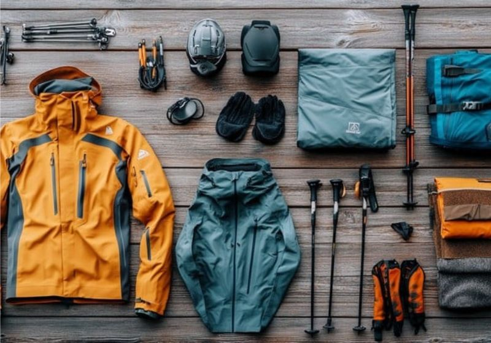

Gear & Planning • Philippines
Trekking Gear Checklist
Prepare sturdy footwear, layered clothing, rain gear, headlamp, water container, food, navigation tools, emergency kit, and a backpack suited to the trip.
Helpful reminders
- Check official park announcements and local weather before visiting.
- Choose sturdy and comfortable footwear suitable for the trail.
- Pack layered clothing and extra socks.
- Bring rain gear for sudden weather changes.
- Carry a headlamp or flashlight with extra batteries.
- Bring enough drinking water and food for the trip.
- Prepare a map, compass, or other navigation tools.
- Pack a first-aid kit and personal medications.
- Use a backpack that fits comfortably and distributes weight properly.
- Check all equipment before leaving home.
- Follow posted rules and instructions from park staff or guides.
- Respect nature and local communities; take all trash with you.